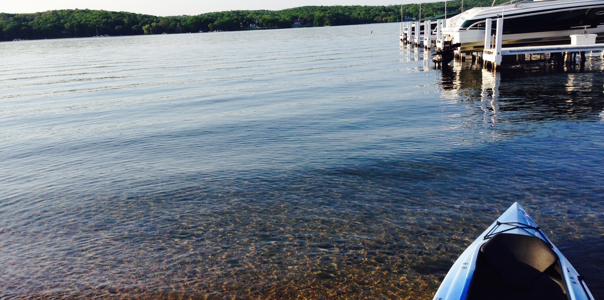

Geneva Lake Conservancy
The Geneva Lake Conservancy is a 501(c)(3) not-for-profit organization dedicated to the preservation of environmentally sensitive lands, open space and the unique character and quality of life of Walworth County, Wisconsin. Working with landowners, and government officials, the Conservancy advocates private and public land use and management decisions that assure responsible growth and protection of natural and historic resources.